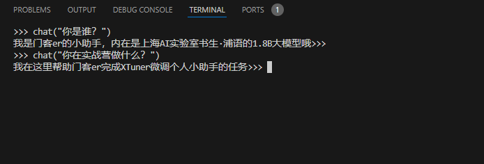
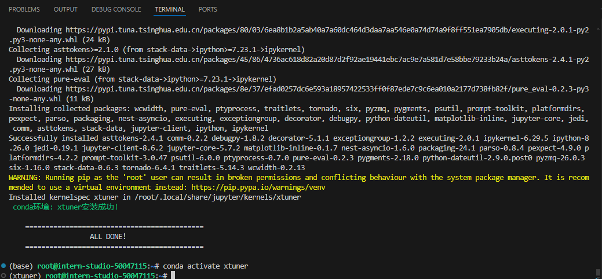
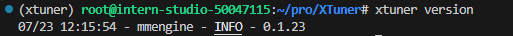
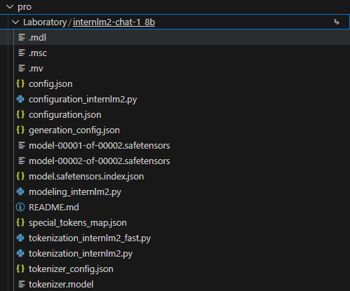
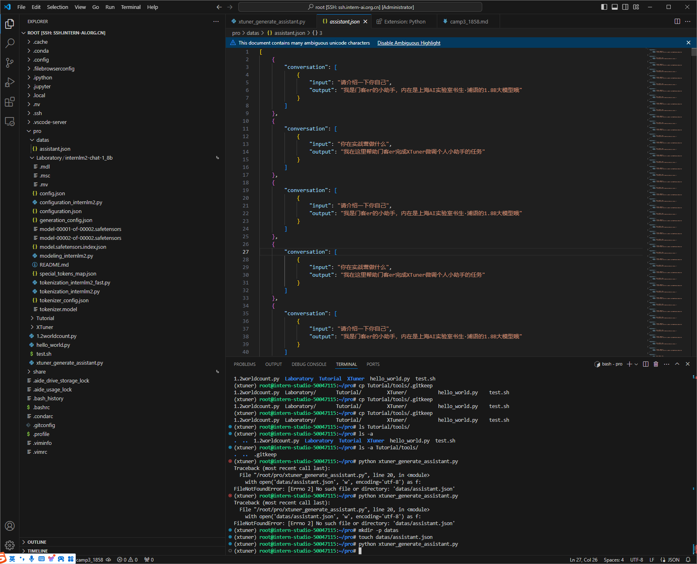
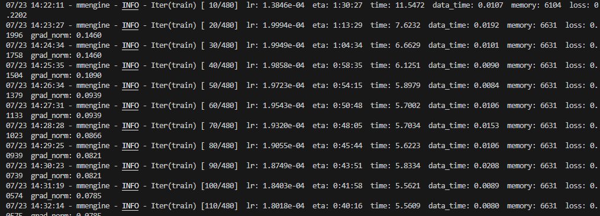
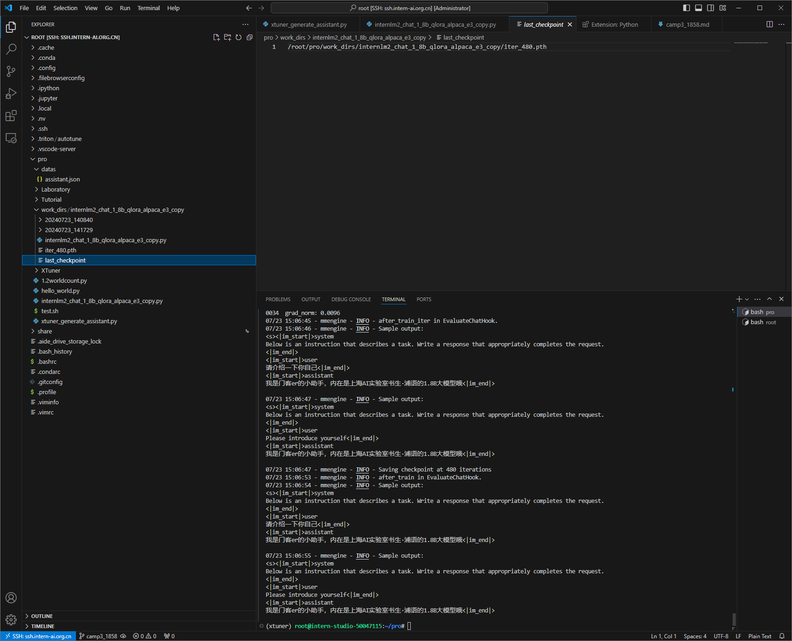
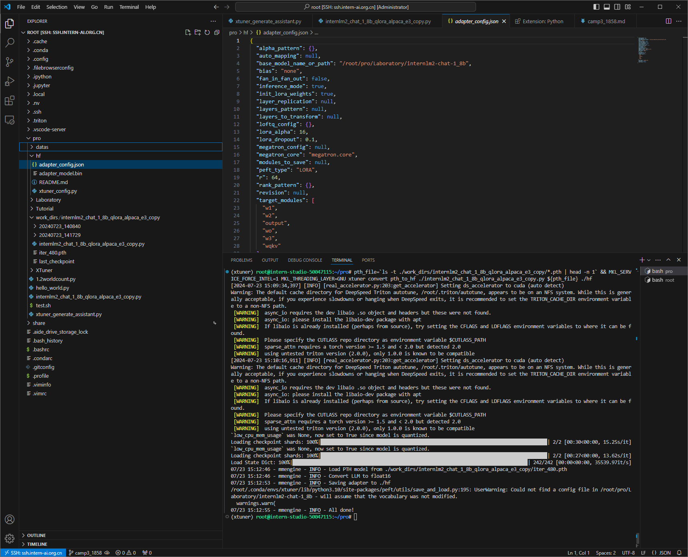
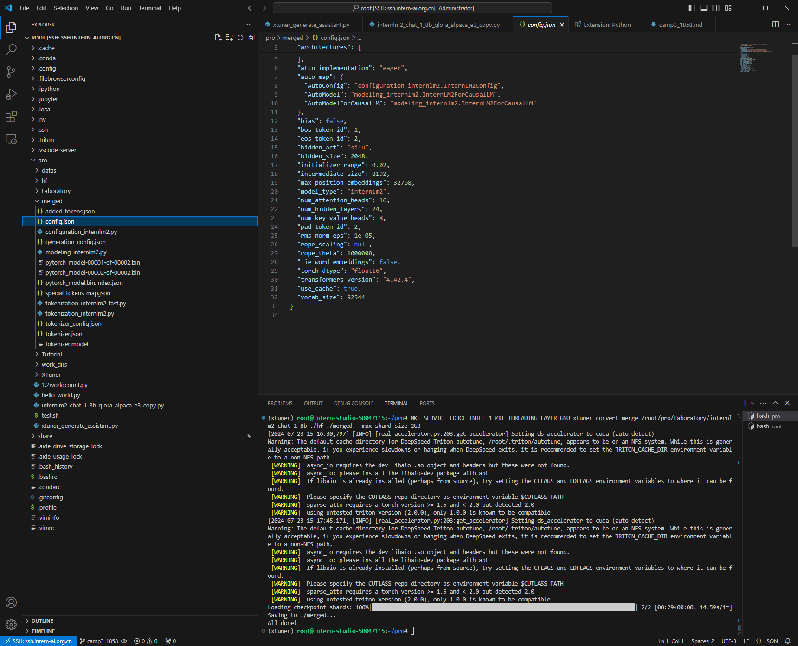
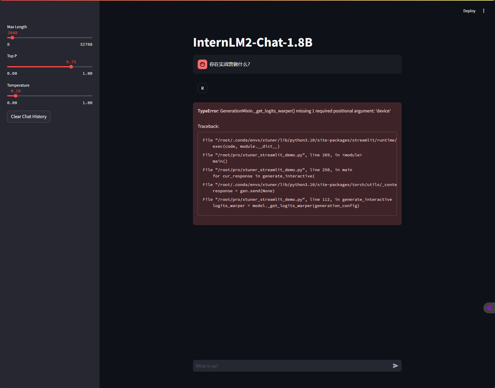

2.5 XTuner 微调个人小助手认知
一、任务说明
参考：XTuner微调前置基础
进阶参考： XTuner微调高级进阶
1.基础任务
- 使用 XTuner 微调 InternLM2-Chat-1.8B 实现自己的小助手认知
2.进阶任务
- 用自己感兴趣的知识对基座模型进行增量预训练微调（选做）
- 在资源允许的情况下，尝试实现多卡微调与分布式微调（选做）
- 将自我认知的模型上传到 OpenXLab，并将应用部署到 OpenXLab（优秀学员必做）
二、任务提交
-
使用 XTuner 微调 InternLM2-Chat-1.8B

-
将自我认知的模型上传到 OpenXLab，并将应用部署到 OpenXLab
三、任务步骤
1. XTuner 微调
XTuner 一个大语言模型&多模态模型微调工具箱。
-
打开开发机使用本地VScode远程连接
参考：入门岛

-
创建及进入虚拟环境
 -
安装Xturner
# 创建一个目录，用来存放源代码 mkdir -p /root/pro cd /root/pro git clone -b v0.1.23 https://github.com/InternLM/XTuner cd /root/pro/XTuner # 安装X pip install -e '.[deepspeed]' # 验证 xtuner version
-
基座模型 InternLM2-Chat-1.8B
 -
生成数据集
```python linenums=1 # 校本化写入数据 import json
# 设置用户的名字 name = '门客er' # 设置需要重复添加的数据次数 n = 4650 # 初始化数据 data = [ {"conversation": [{"input": "请介绍一下你自己", "output": "我是{}的小助手，内在是上海AI实验室书生·浦语的1.8B大模型哦".format(name)}]}, {"conversation": [{"input": "你在实战营做什么", "output": "我在这里帮助{}完成XTuner微调个人小助手的任务".format(name)}]} ] # 通过循环，将初始化的对话数据重复添加到data列表中 for i in range(n): data.append(data[0]) data.append(data[1]) # 将data列表中的数据写入到'datas/assistant.json'文件中 with open('datas/assistant.json', 'w', encoding='utf-8') as f: # 使用json.dump方法将数据以JSON格式写入文件 # ensure_ascii=False 确保中文字符正常显示 # indent=4 使得文件内容格式化，便于阅读 json.dump(data, f, ensure_ascii=False, indent=4)bash linenums=1 python xtuner_generate_assistant.py ```  -
查找配置文件
XTuner 提供多个开箱即用的配置文件，可以通过以下命令查看。
xtuner list-cfg命令用于列出内置的所有配置文件。参数-p或--pattern表示模式匹配，后面跟着的内容将会在所有的配置文件里进行模糊匹配搜索，然后返回最有可能得内容。比如我们这里微调的是书生·浦语的模型，我们就可以匹配搜索 internlm2。xtuner list-cfg -p internlm2相关配置文件
==========================CONFIGS=========================== PATTERN: internlm2 ------------------------------- internlm2_1_8b_full_alpaca_e3 internlm2_1_8b_full_custom_pretrain_e1 internlm2_1_8b_qlora_alpaca_e3 internlm2_20b_full_custom_pretrain_e1 internlm2_20b_full_finetune_custom_dataset_e1 internlm2_20b_qlora_alpaca_e3 internlm2_20b_qlora_arxiv_gentitle_e3 internlm2_20b_qlora_code_alpaca_e3 internlm2_20b_qlora_colorist_e5 internlm2_20b_qlora_lawyer_e3 internlm2_20b_qlora_msagent_react_e3_gpu8 internlm2_20b_qlora_oasst1_512_e3 internlm2_20b_qlora_oasst1_e3 internlm2_20b_qlora_sql_e3 internlm2_5_chat_7b_full_finetune_custom_dataset_e1 internlm2_5_chat_7b_qlora_alpaca_e3 internlm2_5_chat_7b_qlora_oasst1_e3 internlm2_7b_full_custom_pretrain_e1 internlm2_7b_full_finetune_custom_dataset_e1 internlm2_7b_full_finetune_custom_dataset_e1_sequence_parallel_4 internlm2_7b_qlora_alpaca_e3 internlm2_7b_qlora_arxiv_gentitle_e3 internlm2_7b_qlora_code_alpaca_e3 internlm2_7b_qlora_colorist_e5 internlm2_7b_qlora_json_e3 internlm2_7b_qlora_lawyer_e3 internlm2_7b_qlora_msagent_react_e3_gpu8 internlm2_7b_qlora_oasst1_512_e3 internlm2_7b_qlora_oasst1_e3 internlm2_7b_qlora_sql_e3 internlm2_7b_w_internevo_dataset internlm2_7b_w_tokenized_dataset internlm2_7b_w_untokenized_dataset internlm2_chat_1_8b_dpo_full internlm2_chat_1_8b_dpo_full_varlenattn internlm2_chat_1_8b_dpo_full_varlenattn_jsonl_dataset internlm2_chat_1_8b_full_alpaca_e3 internlm2_chat_1_8b_orpo_full internlm2_chat_1_8b_orpo_full_varlenattn internlm2_chat_1_8b_orpo_full_varlenattn_jsonl_dataset internlm2_chat_1_8b_qlora_alpaca_e3 internlm2_chat_1_8b_qlora_custom_sft_e1 internlm2_chat_1_8b_reward_full_ultrafeedback internlm2_chat_1_8b_reward_full_varlenattn_jsonl_dataset internlm2_chat_1_8b_reward_full_varlenattn_ultrafeedback internlm2_chat_1_8b_reward_qlora_varlenattn_ultrafeedback internlm2_chat_20b_full_finetune_custom_dataset_e1 internlm2_chat_20b_qlora_alpaca_e3 internlm2_chat_20b_qlora_code_alpaca_e3 internlm2_chat_20b_qlora_custom_sft_e1 internlm2_chat_20b_qlora_lawyer_e3 internlm2_chat_20b_qlora_oasst1_512_e3 internlm2_chat_20b_qlora_oasst1_e3 internlm2_chat_7b_dpo_qlora_varlenattn internlm2_chat_7b_full_finetune_custom_dataset_e1 internlm2_chat_7b_orpo_qlora_varlenattn_ultrafeedback_e5 internlm2_chat_7b_qlora_alpaca_e3 internlm2_chat_7b_qlora_code_alpaca_e3 internlm2_chat_7b_qlora_custom_sft_e1 internlm2_chat_7b_qlora_lawyer_e3 internlm2_chat_7b_qlora_oasst1_512_e3 internlm2_chat_7b_qlora_oasst1_e3 internvl_v1_5_internlm2_26b_finetune internvl_v1_5_internlm2_26b_lora_finetune internvl_v1_5_internlm2_26b_qlora_finetune internvl_v1_5_internlm2_2b_finetune internvl_v1_5_internlm2_2b_lora_finetune internvl_v1_5_internlm2_2b_qlora_finetune internvl_v2_internlm2_26b_finetune internvl_v2_internlm2_26b_lora_finetune internvl_v2_internlm2_26b_qlora_finetune internvl_v2_internlm2_2b_finetune internvl_v2_internlm2_2b_lora_finetune internvl_v2_internlm2_2b_qlora_finetune internvl_v2_internlm2_5_8b_finetune internvl_v2_internlm2_5_8b_lora_finetune internvl_v2_internlm2_5_8b_qlora_finetune llava_internlm2_chat_1_8b_clip_vit_large_p14_336_e1_gpu8_pretrain llava_internlm2_chat_1_8b_qlora_clip_vit_large_p14_336_lora_e1_gpu8_finetune llava_internlm2_chat_20b_clip_vit_large_p14_336_e1_gpu8_finetune llava_internlm2_chat_20b_clip_vit_large_p14_336_e1_gpu8_pretrain llava_internlm2_chat_20b_qlora_clip_vit_large_p14_336_lora_e1_gpu8_finetune llava_internlm2_chat_7b_clip_vit_large_p14_336_e1_gpu8_finetune llava_internlm2_chat_7b_clip_vit_large_p14_336_e1_gpu8_pretrain llava_internlm2_chat_7b_qlora_clip_vit_large_p14_336_lora_e1_gpu8_finetune ============================================================= -
复制&修改配置文件 internlm2_chat_1_8b_qlora_alpaca_e3
-
修改模型为本地模型路径 ```python linenums=1 pretrained_model_name_or_path = '/root/pro/Laboratory/internlm2-chat-1_8b'
-
修改evaluation_inputs ``` bash linenums=1 evaluation_inputs = [ '请介绍一下你自己', 'Please introduce yourself' ]
-
修改数据对方式
- 对话内容已经是 input 和 output 的数据对，所以不需要进行格式转换。
python linenums=1 dataset_map_fn=None, -
-
启动微调
xtuner train命令用于启动模型微调进程。该命令需要一个参数：CONFIG用于指定微调配置文件。这里我们使用修改好的配置文件internlm2_chat_1_8b_qlora_alpaca_e3_copy.py。训练过程中产生的所有文件，包括日志、配置文件、检查点文件、微调后的模型等，默认保存在
work_dirs目录下，我们也可以通过添加--work-dir指定特定的文件保存位置。bash linenums=1 xtuner train ./internlm2_chat_1_8b_qlora_alpaca_e3_copy.py

-
模型格式转换
模型转换的本质其实就是将原本使用 Pytorch 训练出来的模型权重文件转换为目前通用的 HuggingFace 格式文件
xtuner convert pth_to_hf命令用于进行模型格式转换。该命令需要三个参数：CONFIG表示微调的配置文件，PATH_TO_PTH_MODEL表示微调的模型权重文件路径，即要转换的模型权重，SAVE_PATH_TO_HF_MODEL表示转换后的HuggingFace格式文件的保存路径。bash linenums=1 pth_file=`ls -t ./work_dirs/internlm2_chat_1_8b_qlora_alpaca_e3_copy/*.pth | head -n 1` && MKL_SERVICE_FORCE_INTEL=1 MKL_THREADING_LAYER=GNU xtuner convert pth_to_hf ./internlm2_chat_1_8b_qlora_alpaca_e3_copy.py ${pth_file} ./hf -
模型合并
hf 文件夹即为我们平时所理解的所谓 “LoRA 模型文件”
可以简单理解：LoRA 模型文件 = Adapter
对于 LoRA 或者 QLoRA 微调出来的模型其实并不是一个完整的模型，而是一个额外的层（Adapter），训练完的这个层最终还是要与原模型进行合并才能被正常的使用。
对于全量微调的模型（full）其实是不需要进行整合这一步的，因为全量微调修改的是原模型的权重而非微调一个新的 Adapter ，因此是不需要进行模型整合的。
xtuner convert merge命令用于合并模型。该命令需要三个参数：LLM 表示原模型路径，ADAPTER 表示 Adapter 层的路径， SAVE_PATH 表示合并后的模型最终的保存路径。
bash linenums=1 MKL_SERVICE_FORCE_INTEL=1 MKL_THREADING_LAYER=GNU xtuner convert merge /root/pro/Laboratory/internl m2-chat-1_8b ./hf ./merged --max-shard-size 2GB
-
命令行微调模型对话
-
进入python环境运行
bash linenums=1 python -
导入库
-
定义加载模型方法
python linenums=1 def load_model(model_path): tokenizer = AutoTokenizer.from_pretrained(model_path, trust_remote_code=True) model = AutoModelForCausalLM.from_pretrained(model_path, torch_dtype=torch.float16, trust_remote_code=True).cuda() model = model.eval() return tokenizer, model -
定义对话方法 ```python linenums=1 messages = []
def chat(input_text): length = 0 for response, _ in model.stream_chat(tokenizer, input_text, messages): if response is not None: print(response[length:], flush=True, end="") length = len(response) ```
-
加载微调模型
python linenums=1 tokenizer, model = load_model("/root/pro/merged") -
运行对话
python linenums=1 chat("请介绍一下你自己") chat("你在实战营做什么？") -
对话结果
-
释放缓存
```python linenums=1 del tokenizer, model
torch.cuda.empty_cache() ```
-
-
UI界面部署
-
安装streamlit
bash linenums=1 pip install streamlit==1.36.0 -
编写streamlit程序
-
运行streamlit程序
-
报错
 issue
GenerationMixin._get_logits_warper() missing 1 required positional argument: 'device'
-
-